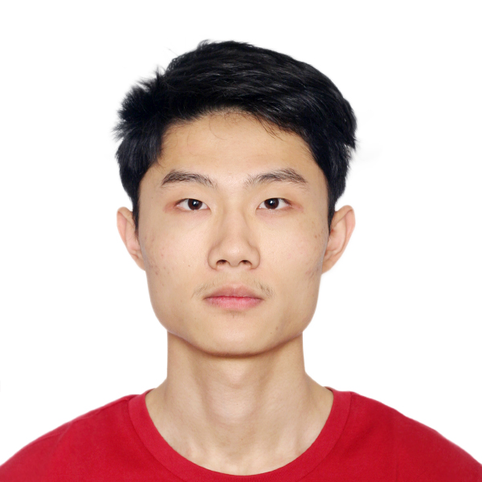
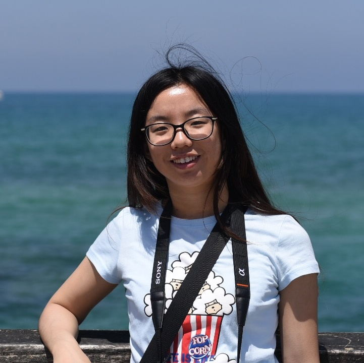
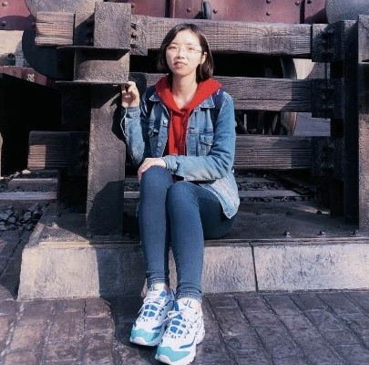
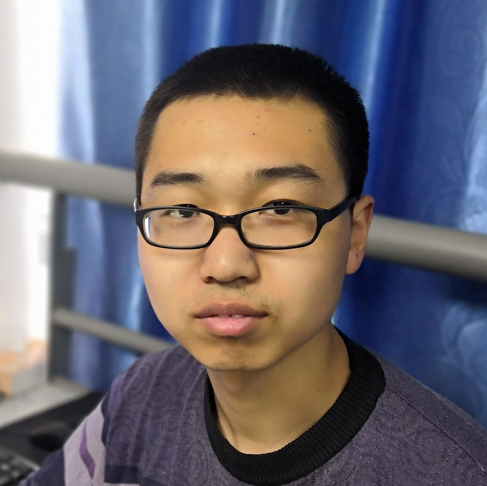
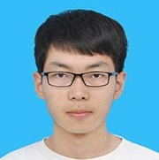
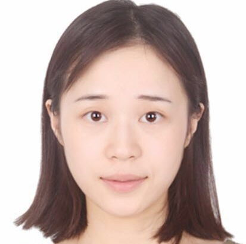
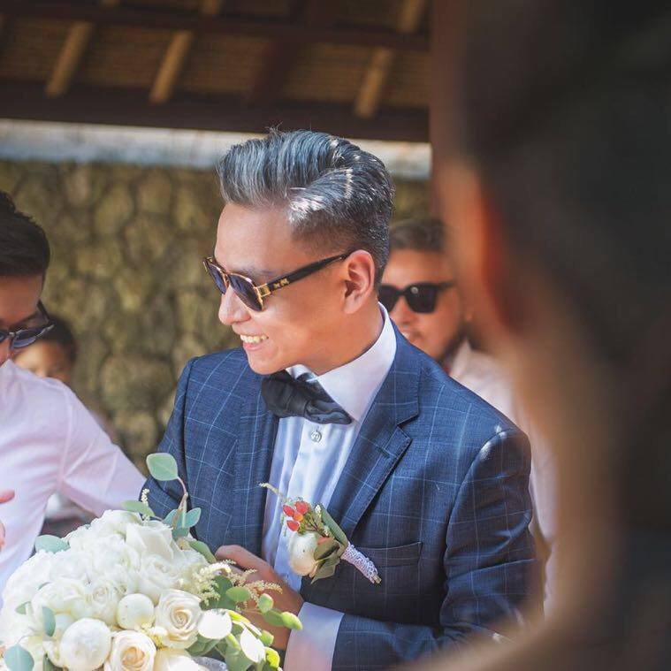

- 综述进展报告讲者：陈仁杰
- 报告题目：广义重心坐标及应用
- 报告摘要：广义重心坐标是图形学中的一个基础和重要工具，有着非常广泛的实际应用。本报告将回顾一些常用重心坐标，包括三点坐标、调和坐标和柯西复数坐标，介绍近年在多边形网格共形映射、GPU加速实时形状编辑和机器人路径规划等方面的一些应用工作，并探讨进一步研究方向。
- 讲者简介：德国马普计算机研究所（Max Planck Institute for Informatics）高级研究员，图像与几何研究小组负责人。陈仁杰博士于2010年毕业于浙江大学数学系，
获得博士学位后曾在以色列理工大学和美国北卡罗来纳大学教堂山分校从事博士后研究，研究领域为计算机图形学，主要研究方向包括数字几何处理、并行几何计算及裸眼3D显示器等，相关论文发表在计算机图形学和几何处理领域重要国际
会议和期刊上，包括SIGGRAPH、SIGGRAPH Asia、EG、SGP、CGF、CAGD等，担任The Visual Computer 期刊编委和多届SGP国际程序委员会成员。
- 个人主页： https://people.mpi-inf.mpg.de/~chen/
- 综述进展报告讲者：程志全
- 报告题目：三维化身——三维人体数据的智能化获取与产业化应用
- 报告摘要：化身（Avatar）一词源于佛教用语，指神来到人间的具体形象；计算机图形学领域，一般指三维人体模型，又经常称为虚拟人、数字人。本次报告综述三维化身的技术进展，重点阐述化身科技团队的三维化身核心技术；说明三维人体数据是如何智能化获取的：在无需用户裸体的条件下，机器准确量体是如何实现的；进而，点明三维化身技术的典型应用场景，探讨三维化身的产业化应用前景。一句话点题，化身科技团队期盼着与相关专家/学者的深度合作，共同推动三维化身在计算机图形学等相关领域的蓬勃发展。“瞬间科技化身、再造数字人生”是应该能实现的，最好由合作的我们来共同实现。
- 讲者简介：博士，湖南化身科技有限公司总经理，原国防科学技术大学计算机学院化身科技团队负责人。2000年、2003年和2008年于国防科学技术大学计算机学院获得工学学士、硕士和博士学位，2010年在英国卡迪夫大学进行为期1年的学术访问。2008-2013年在国防科学技术大学计算机学院担任教师职务。2014年-至今，化身科技有限公司。程志全入选2017年科技部人才推进计划的创新创业人才、2019年国家高层次人才特殊支持计划（又称“万人计划”）的科技创业领军人才，专注于三维化身技术研究与产业化应用。
- 相关学术成果主页： http://www.avatarscience.cn/science/
- 综述进展报告讲者：董豪
- 报告题目：生成对抗网络：从G+D到G+D+E
- 报告摘要：生成对抗网络（Generative Adversarial Networks, GANs）是深度学习的一种数据生成算法，有着非常广泛的实际应用。本报告将介绍经典GAN通过生成器（Generator, G）和判别器（Discriminator，D）实现的一些经典应用，然后总结近年来的一些工作是如何通过引入编码器（Encoder，E）来实现更加复杂的应用，并探讨进一步的研究方向。
-
讲者简介：2019年毕业于帝国理工学院，研究领域为深度学习、计算机视觉以及其在医疗中的应用。在ICCV、TIFS、TMI、TNSRE、ACM MM等国际会议与刊物发表论文10余篇。同时在SIGGRAPH、TIP、TKDE、Neurocomputing等国际会议与刊物担任审稿人。他致力于推广人工智能技术，是深度学习开源框架TensorLayer的创始人，并获得ACM MM 2017年度最佳开源软件奖。
- 个人主页： https://zsdonghao.github.io
- 综述进展报告讲者：刘利刚
- 报告题目：三维形状的理解、分析与重建
- 报告摘要：利用移动机器人对未知室内场景进行自主三维扫描与重建是机器人、三维视觉、计算机图形学领域共同关注的重要研究方向。相比于人手持扫描，机器人自动扫描具有不易疲劳、稳定性好、控制精度高等优点。我们提出了一种全新的自主场景三维重建的方法，通过为自动扫描提供基于物体感知的引导，使得对未知场景的探索、理解和重建能在一次扫描规划中完成。该方法交替进行物体分析和基于物体感知的信息增益分析，从而为机器人的全局探索和局部扫描确定了下一个最佳物体以及下一个最佳视点。此外，该研究还针对不完全重建点云的语义理解问题，提出了通过多类图割最小化方法来同时求解物体分割和物体识别的新思路。虚拟与真实场景的实验结果展现了所提出方法的可行性和高效性。
-
讲者简介：中国科学技术大学教授，中国科学院“百人计划”。于2001年在浙江大学获得应用数学博士学位；2001年至2004年期间在微软亚洲研究院工作；2004年至2011年期间在浙江大学数学系工作。2009年至2011年期间，在美国哈佛大学进行学术访问研究。研究兴趣包括计算机图形学、3D几何建模与处理等。已在计算机图形学顶级(TOP)期刊ACM Transactions on Graphics上发表论文二十余篇。2012年获得国家自然科学“优秀青年基金”项目。曾获得陆增镛CAD&CG高科技奖一等奖(2010)、国家自然科学奖二等奖(2013)。国际会议GMP 2017大会共同主席，SPM 2014、SGP 2015、CVM 2016、CAD/Graphics 2017、GMP 2018的论文共同主席。学术期刊IEEE TVCG、IEEE CG&A、CGF、CAGD、C&G、The Visual Computer编委。
- 个人主页： http://staff.ustc.edu.cn/~lgliu/
- 综述进展报告讲者：刘永进
- 报告题目：物理可实现的任意三维模型间变形方法及应用研究
- 报告摘要：物理可实现的三维可变形模型在航空航天、教育、娱乐等产业中都有着广泛的应用， 如何快速高效的实现任意模型间的变形仍是一个有待解决的问题。图形学领域所关注的模型间变形方法研究多集中于模拟初始模型与目标模型间的插值变换计算机动画过程，针对物理可实现的三维模型变形方法研究并不多见。本次报告介绍了一种模块化可变形三维模型的变形方法，并结合3D打印与模块化机器人技术加以实现。进一步通过模块化机器人的人机交互用户评估实验，验证了我们所提出的物理可变形三维模型可以帮助提高空间认知能力，进一步拓宽了物理可变形三维模型的应用范畴。
-
讲者简介：清华大学计算机系长聘教授，博士生导师，人机交互与媒体集成研究所所长。获得国家自然科学基金重点项目、国家杰出青年基金、国家优秀青年基金等项目的资助，入选2011年度“教育部新世纪优秀人才支持计划”。两次获得世界华人数学家联盟年度最佳论文奖（2017，2018）、国际著名会议SPM2014的最佳论文奖、
CVMJ期刊2015年度最佳论文奖以及指导博士生获得IEEE ROBIO 2017最佳学生论文提名奖，培养多名博士生、硕士生获得清华大学校级优秀博士/硕士学位论文。获得英国皇家学会牛顿高级学者基金（2017）和日本大川情报通信基金研究助成项目奖（2016），获得2011年国家技术发明奖二等奖和2018年吴文俊人工智能自然科学奖一等奖
- 个人主页： https://cg.cs.tsinghua.edu.cn/people/~Yongjin/Yongjin.htm
- 综述进展报告讲者：汪云海
- 报告题目：数据图形学：基于几何优化的信息可视化研究
- 报告摘要：信息可视化将抽象的数据映射为可见的图形，直观的呈现数据之间的结构关系，使人们通过可视交互的方式探索数据。为了生成有效、美观的可视化图形，图形元素之间的几何关系需要尽可能符合视觉感知特性，并帮助可视化系统提供丰富灵活的交互功能。在该报告中，我们将介绍我们基于几何优化方法在自动可视化、图可视化和文本可视化中的相关工作。
-
讲者简介：山东大学计算机学院教授。研究方向为计算机图形与可视化，探索新颖的数据可视化方法，帮助人们更好的理解数据。在顶级国际期刊及会议上发表高水平论文30余篇，其中CCF A类论文14篇，包括可视化领域顶级期刊IEEE TVCG论文10篇（其中第一作者论文9篇）, 图形学领域顶级期刊ACM TOG论文2篇（均为第一作者）等。其研究成果已被应用到气象、医学和生物基因等多个领域。其开发的Shape COSEG数据集已经成为该领域的标准数据集。主持中德联合基金项目、国家自然科学基金面上项目、国家重点研发计划子课题、国家自然科学基金重点项目子课题、国防科工委挑战计划项目等科研项目多项。
- 个人主页： http://www.yunhaiwang.org/
- 综述进展报告讲者：徐凯
- 报告题目：基于深度学习的三维几何生成
- 报告摘要：基于深度学习的三维几何生成是当前图形学和深度学习领域的热点问题。本报告将从四个维度回顾和总结近几年的相关工作。首先是三维几何表示方法。这是论及三维深度学习时绕不开的话题。本报告在总结现有的表示方法的同时，分享一些个人对三维几何表示的思考，例如不同的表示方法如何结合与互补。其次是生成的控制条件，包括无控制条件的随机生成，和基于各种模态输入（如图像、草图、三维点云）的条件生成。第三个维度是三维结构的表示与建模。当前三维生成模型大多只关注几何细节的重建和生成。细节保持是局部约束，一般可以通过提高分辨率来实现。而结构保持涉及非局部、上下文约束，也许显式的关系建模与推理是必要的。第四个维度是分析与生成的耦合方式。当前的生成模型，不论是变分自编码器还是对抗网络，都体现了分析（推断或判别）与生成的耦合。如何将结构推断和语义分析融合到三维几何生成模型中，使生成结果具有更加合理的结构和功能，是值得深入思考的问题。报告最后简要介绍我们近两的代表工作，并尝试探讨该方向的未来发展趋势。
-
讲者简介：国防科技大学副教授。于国防科技大学获得计算机博士学位。曾赴西蒙弗雷泽大学、普林斯顿大学进行访问研究。研究方向为数据驱动的三维几何分析与建模、基于三维几何的计算机视觉等。发表SIGGRAPH、CVPR等CCF A类论文30余篇。现担任Computer Graphics Forum、Computers and Graphics和The Visual Computer等图形学重要期刊的编委。担任CAD/Graphics 2017、ICVRV 2017和GDC 2016等国际国内会议的论文共同主席。多次担任SIGGRAPH、SIGGRAPH Asia等顶级国际会议的程序委员。曾获湖南省自然科学一等奖、军队科技进步二等奖、全军优秀博士论文奖、中国工业与应用数学学会“几何设计与计算青年学者奖”、“湖湘青年英才”奖、陆增镛CAD&CG高科技奖二等奖。曾获国家自然科学“优秀青年基金”和湖南省自然科学“杰出青年基金”。
- 个人主页： https://kevinkaixu.net/
- 综述进展报告讲者：张鑫
- 报告题目：上千款游戏都是如何提高性能表现的？
- 报告摘要：性能优化几乎是所有游戏项目研发过程中的必经之路，用户的需求和项目的要求总在不停地增长，同屏人数、屏幕特效和场景复杂度永远在向着“榨干”硬件的趋势逼近。在四年前，一款游戏项目的性能优化工作大概需要花费一个专家团队长达6-12个月的时间来完成，而现在，游戏团队通过UWA只需要少量的人力花费1个月的时间就可以让项目性能转危为安。因此，本次报告将重点介绍UWA是如何通过技术和数据来达到性能瓶颈的高效定位，并帮助大量的技术团队简单、快速地解决问题。
-
讲者简介：侑虎科技, CEO & Co-founder，毕业于浙江大学CAD&CG国家重点实验室，理学博士学位，主要研究方向为计算机图形学、数字几何处理等。2011年7月加入盛大游戏技术中心，任游戏开发工程师，参与了盛大第一款3D MMO游戏引擎的研发。2012年10月加入Unity大中华区，担任技术支持经理，主要从事与Unity相关的技术研发、支持和培训等工作。2015年8月，创办侑虎科技（上海）有限公司，着力为游戏及虚拟现实开发者提供深入的技术咨询平台，主要从事性能测评与优化、技术培训与问答，在中国已经为数千家游戏研发团队提供专业的技术咨询服务。
- 相关产品网址： www.uwa4d.com
- 综述进展报告讲者：周晓巍
- 报告题目：基于视觉的物体和人体3D位姿估计
- 报告摘要：从图像或者视频中还原物体或者人体的3D位姿是近年来计算机视觉领域的一个研究热点，在增强现实、智能机器人、无人驾驶、人机交互等方面也有着广泛的应用。本次报告将总结近年来的相关成果，简要介绍本课题组在该方向上的最新工作，并且探讨存在的挑战和发展趋势。
-
讲者简介：浙江大学CAD&CG国家重点实验室研究员，国家青年千人计划入选者。2008年本科毕业于浙江大学，2013年博士毕业于香港科技大学。2014年至2017年在美国宾夕法尼亚大学GRASP机器人实验室从事博士后研究。
研究方向主要是计算机视觉及其在机器人、增强现实、医学影像分析等领域的应用，目前课题侧重于三维场景重建和语义计算，包括三维物体和人体的检测、识别、姿态估计、运动恢复、在线重建以及匹配等问题。策划和组织了Geometry
Meets Deep Learning
Workshops，并长期担任PAMI、IJCV、TIP等二十余种SCI期刊审稿人以及CVPR、ICCV、IJCAI等计算机领域顶级会程序委员会委员
- 个人主页： http://www.cad.zju.edu.cn/home/xzhou
| 最新成果报告讲者（按姓氏拼音排序）
|
|  |
 |
 |
| 董思言 |
李曼祎 |
刘丽娟 |
|  |
|
 |
| 刘浩 |
刘昊宇 |
吴润迪 |
| 中国科学技术大学 |
中国科学技术大学 |
北京大学 |
|  |
|
 |
| 余旻婧 |
张浩 |
张心欣 |
| 清华大学 |
清华大学 |
北京电影学院 |
- 论文题目：Multi-Robot Collaborative Dense Scene
Reconstruction
- 论文作者：Siyan Dong, Kai Xu, Qiang Zhou, Andrea
Tagliasacchi, Shiqing Xin, Matthias Nießner, Baoquan Chen
- 论文摘要：We present an autonomous scanning approach
which allows multiple robots to perform collaborative scanning for dense 3D reconstruction
of unknown indoor scenes. Our method plans scanning paths for several robots, allowing them
to efficiently coordinate with
each other such that the collective scanning coverage and reconstruction quality is
maximized while the overall scanning effort is minimized. To this end, we define the problem
as a dynamic task assignment and introduce a novel formulation based on Optimal Mass
Transport (OMT). Given the currently scanned scene, a set of task views
are extracted to cover scene regions which are either unknown or uncertain. These task views
are assigned to the robots based on the OMT optimization. We then compute for each robot a
smooth path over its assigned tasks by solving an approximate traveling salesman problem. In
order to showcase our algorithm, we implement a multi-robot auto-scanning system.
Since our method is computationally efficient, we can easily run it in real time on
commodity hardware, and combine it with online RGB-D reconstruction approaches. In our
results, we show several real-world examples of large indoor environments; in addition, we
build a benchmark with a series of carefully designed metrics for quantitatively evaluating
multi-robot auto scanning.
Overall, we are able to demonstrate high-quality scanning results with respect to
reconstruction quality and scanning efficiency, which significantly outperforms existing
alternatives.
- 报告人：董思言，山东大学
- 报告人邮箱：siyandong.3@gmail.com
-
报告人简介：山东大学交叉研究中心二年级博士生，导师陈宝权。现于北京大学前沿计算研究中心可视计算与学习实验室交流，并在北京电影学院未来影像高精尖创新中心实习。研究方向为三维重建、同时定位与地图构建(SLAM)和机器人。
- 论文题目：GRAINS: Generative Recursive Autoencoders for Indoor Scenes
- 论文作者：Manyi Li, Akshay Gadi Patil, Kai Xu, Siddhartha Chaudhuri, Owais Khan, Ariel Shamir, Changhe Tu, Baoquan Chen, Daniel Cohen-Or, Hao Zhang
- 论文摘要：We present a generative neural network which enables us to generate plausible 3D indoor scenes in large quantities and varieties, easily and highly efficiently. Our key observation is that indoor scene structures are inherently hierarchical. Hence, our network is not convolutional; it is a recursive neural network or RvNN. Using a dataset of annotated scene hierarchies, we train a variational recursive autoencoder, or RvNN-VAE, which performs scene object grouping during its encoding phase and scene generation during decoding. Specifically, a set of encoders are recursively applied to group 3D objects based on support, surround, and co-occurrence relations in a scene, encoding information about objects&apos spatial properties, semantics, and their relative positioning with respect to other objects in the hierarchy. By training a variational autoencoder (VAE), the resulting fixed-length codes roughly follow a Gaussian distribution. A novel 3D scene can be generated hierarchically by the decoder from a randomly sampled code from the learned distribution. We coin our method GRAINS, for Generative Recursive Autoencoders for INdoor Scenes. We demonstrate the capability of GRAINS to generate plausible and diverse 3D indoor scenes and compare with existing methods for 3D scene synthesis. We show applications of GRAINS including 3D scene modeling from 2D layouts, scene editing, and semantic scene segmentation via PointNet whose performance is boosted by the large quantity and variety of 3D scenes generated by our method.
- 报告人：李曼祎
- 报告人邮箱：manyi_li163@163.com
-
报告人简介：2018年12月博士毕业于山东大学，指导老师屠长河教授。研究方向是计算机图形学，主要关注三维物体和场景的理解与建模。
- 论文题目：NeuroSkinning: Automatic Skin Binding for Production Characters with Deep Graph Networks
- 论文作者：Lijuan Liu, Youyi Zheng, Di Tang, Yi Yuan, Changjie Fan, Kun Zhou
- 论文摘要：We present a deep-learning-based method to automatically compute skin weights for skeleton-based deformation of production characters. Given a character mesh and its associated skeleton hierarchy in rest pose, our method constructs a graph for the mesh, each node of which encodes the mesh-skeleton attributes of a vertex. An end-to-end deep graph convolution network is then introduced to learn the mesh-skeleton binding patterns from a set of character models with skin weights painted by artists. The network can be used to predict the skin weight map for a new character model, which describes how the skeleton hierarchy influences the mesh vertices during deformation. Our method is designed to work for non-manifold meshes with multiple disjoint or intersected components, which are common in game production and require complex skeleton hierarchies for animation control. We tested our method on the datasets of two commercial games. Experiments show that the predicted skin weight maps can be readily applied to characters in the production pipeline to generate high-quality deformations.
- 报告人：刘丽娟
- 报告人邮箱：liulijuan@corp.netease.com
-
报告人简介：网易伏羲实验室研究员
- 论文题目：Computational Peeling Art Design
- 论文作者：Hao Liu*, Xiaoteng Zhang*, Xiaoming Fu,
Zhichao Dong, Ligang Liu
- 论文摘要：Artist peels citrus fruit into a variety of
2D elegant shapes, most depicting animals, plants, andcartoons. It is a creativeart form,
called Citrus Peeling Art.
It follows the conservation principle, i.e., each shape must be created using one entire
peel. Center to this art is to find the cuts on the citruses so that the citruses can be cut
and unfolded into
the input designed shapes. However, it is extremely difficult for users to imagine and
generate the cuts for their desired shapes. To this end, we present a computational method
for citrus peeling art
design. Our key insight is that instead of solving the difficult cut generation problem, we
map the input designed shape onto the citrus in an attempt to cover the entire citrus and
use the mapped boundary
to generate the cut paths. Sometimes, the mapped shape is unable to completely cover the
citrus. Then, we develop five customized ways of interaction that are used to rectify the
input shape
suitable for citrus peeling art. The mapping process and user interactions are iteratively
conducted to satisfy user design intentions. A large number of experiments, including a
formative user study,
demonstrate the capability and practicability of our method for peeling art design and
construction.
- 报告人：刘浩
- 报告人邮箱：pllh@mail.ustc.edu.cn
-
报告人简介：中国科学技术大学数学科学学院硕士研究生，2017年毕业于中国科学技术大学，并继续在中国科学技术大学GCL实验室攻读硕士学位，指导老师刘利刚教授，傅孝明副研究员。研究兴趣是几何处理与物理模拟。
- 论文题目：Atlas Refinement with Bounded Packing
Efficiency
- 论文作者：Haoyu Liu, Xiaoming Fu, Chunyang Ye,
Shuangming Chai, Ligang Liu
- 论文摘要：We present a novel algorithm to refine an
input atlas with bounded packing efficiency. Central to this method is the use of the
axis-aligned structure
that converts the general polygon packing problem to a rectangle packing problem, which is
easier to achieve high packing efficiency. Given a parameterized mesh with no flipped
triangles, we propose a new
angle-driven deformation strategy to transform it into an axis-aligned chart, which can be
decomposed into rectangles by the motorcycle graph algorithm. Since motorcycle graphs are
not unique, we select the one
balancing the trade-off between the packing efficiency and chart boundary length, while
maintaining bounded packing efficiency. The axis-aligned chart often contains greater
distortion than the input, so we try
to reduce the distortion while bounding the packing efficiency and retaining bijection. We
demonstrate the efficacy of our method on a data set containing over five thousand complex
models. For all models, our
method is able to produce packed atlases with bounded packing efficiency; for example, when
the packing efficiency bound is set to 80%, we elongate the boundary length by an average of
78.7% and increase the
distortion by an average of 0.0533%. Compared to state-of-the-art methods, our method is
much faster and achieves greater packing efficiency.
- 报告人：刘昊宇
- 报告人邮箱：optexeon@mail.ustc.edu.cn
-
报告人简介：中国科学技术大学数学科学学院博士研究生，2013年本科毕业于中国科学技术大学，并于2014年起在中国科学技术大学GCL实验室攻读博士学位，指导老师刘利刚教授与傅孝明副研究员。研究方向是计算机图形学。
- 论文题目：Learning Character-Agnostic Motion for Motion Retargeting in 2D
- 论文作者：Kfir Aberman, Rundi Wu, Dani Lischinski, Baoquan Chen, Daniel Cohen-Or
- 论文摘要：Analyzing human motion is a challenging task with a wide variety of applications in computer vision and in graphics. One such application, of particular importance in computer animation, is the retargeting of motion from one performer to another.
While humans move in three dimensions, the vast majority of human motions are captured using video, requiring 2D-to-3D pose and camera recovery, before existing retargeting approaches may be applied. In this paper, we present a new method for retargeting video-captured motion between different human performers, without the need to explicitly reconstruct 3D poses and/or camera parameters. In order to achieve our goal, we learn to extract, directly from a video, a high-level latent motion representation, which is invariant to the skeleton geometry and the camera view. Our key idea is to train a deep neural network to decompose temporal sequences of 2D poses into three components: motion, skeleton, and camera view-angle. Having extracted such a representation, we are able to re-combine motion with novel skeletons and camera views, and decode a retargeted temporal sequence, which we compare to a ground truth from a synthetic dataset.
We demonstrate that our framework can be used to robustly extract human motion from videos, bypassing 3D reconstruction, and outperforming existing retargeting methods, when applied to videos in-the-wild. It also enables additional applications, such as motion transfer, video-driven cartoons, and motion retrieval.
- 报告人：吴润迪
- 报告人邮箱：rundi_wu@pku.edu.cn
-
报告人简介：北京大学大三本科生，第一届图灵班学生。目前由陈宝权教授指导，在北京大学VCL实验室实习，主要研究领域是motion analysis和animation相关内容，同时参与开源项目TensorLayer 2.0开发。
- 论文题目：LineUp: Computing Chain-based Physical
Transformation
- 论文作者：Minjing Yu, Zipeng Ye, Yong-jin Liu, Ying
He, Charlie C. L. Wang
- 论文摘要：In this paper, we introduce a novel method
that can generate a sequence of physical transformations between 3D models with different
shape and
topology. Feasible transformations are realized on a chain structure with connected
components that are 3D printed. Collision-free motions are computed to transform between
different configurations of
the 3D printed chain structure. To realize the transformation between different 3D models,
we first voxelize these input models into similar number of voxels. The challenging part of
our approach is to
generate a simple path—as a chain configuration to connect most voxels. A layer-based
algorithm is developed with theoretical guarantee of the existence and the path length. We
find that collision-free motion
sequence can always be generated when using a straight line as the intermediate
configuration of transformation. The effectiveness of our method is demonstrated by both the
simulation and the experimental tests
taken on 3D printed chains.
- 报告人：余旻婧
- 报告人邮箱：yumj14@mails.tsinghua.edu.cn
-
报告人简介：清华大学计算机科学与技术系在读博士生，2014年于武汉大学获学士学位。博士就读期间，工作曾发表于ACM Transactions on Graphics(TOG), IEEE Transactions on Pattern Analysis and Machine Intelligence(TPAMI)，IEEE Conference on Computer Vision and Pattern Recognition(CVPR)等高水平期刊及会议上。主要研究方向包括计算机图形学，认知计算等。
- 论文题目：InteractionFusion: Real-time Reconstruction
of Hand Poses and Deformable Objects in Hand-object Interactions
- 论文作者：Hao Zhang, Zihao Bo, Junhai Yong, Feng Xu
- 论文摘要：Hand-object interaction is challenge to be
reconstructed but important for many applications like HCI, robotics and so on. Previous
works focus on either the hand or the object while we jointly track the hand poses, fuse the
3D object model and reconstruct its
rigid and nonrigid motions, and perform all these tasks in real time. To achieve this, we
first use a DNN to segment the hand and object in the two input depth streams and predict
the current hand pose based on the previous poses by a pre-trained LSTM network. With this
information, a unified optimization framework is
proposed to jointly track the hand poses and object motions. The optimization integrates the
segmented depth maps, the predicted motion, a spatial-temporal varying rigidity regularizer
and a real-time contact constraint. A nonrigid fusion technique is further involved to
reconstruct the object model. Experiments demonstrate
that our method can solve the ambiguity caused by heavy occlusions between hand and object,
and generate accurate results for various objects and interacting motions.
- 报告人：张浩，清华大学
- 报告人邮箱：zhanghao16@mails.tsinghua.edu.cn
-
报告人简介：分别于2013年和2016年从北京航空航天大学获得工学学士学位和工学硕士学位，目前在清华大学软件学院攻读博士学位。他的研究领域为动态重建和运动分析。
- 论文题目：Efficient and Conservative Fluids Using
Bidirectional Mapping
- 论文作者： Ziyin Qu*， Xinxin Zhang*， Ming Gao，
Chenfanfu Jiang， Baoquan Chen
- 论文摘要：Eulerian grid-based fluid simulation methods
gain the popularity in computer graphics for its great stability and ease of control.
However, such advantages come at the cost of numerical dissipation, which has been
recognized as the main drawback of the family of Semi-Lagrangian and time-splitting based
schemes. On the other hand,
the particle-grid hybrid methods are capable of resolving this problem by paying tremendous
amount of extra computational overhead due to the indispensable communications between
particles and the grid.
Some delicate integrators have been designed to better conserve fluid energy, but
nevertheless could not be applied to the advections of many other physical quantities. In
this paper, we introduce BiMocq^n,
an unconditionally stable, pure Eulerian-based advection scheme to efficiently preserve the
advection accuracy of all physical quantities for long-term fluid simulations. Our approach
is built upon the method
of characteristic map-ping (MCM); instead of the costly evaluation of the temporal
characteristic integral, we evolve the mapping function itself by solving an advection
equation for the mappings. We introduce
the dual mesh characteristics (DMC)model to accurately interpolate the high-gradient
mapping. Furthermore, toavoid visual artifacts introduced by fluid distortion and grid
remeshing, we track multi-levels of
the mappings to ensure long-term integration of sharp features. We conduct comprehensive 2D
and 3D benchmarks to compare against alternative advection schemes. In particular, for the
vortical flow and level set
experiments, our method outperforms almost all state-of-art hybrid schemes, including FLIP,
PolyPic and Particle-Level-Set, at the costof only two Semi-Lagrangian advections.
Additionally, our method does not
rely on the particle-grid transfer operations, leading to a highly paralleliz-able pipeline.
As a result, more than 45×performance acceleration can be achieved via even a straight
forward porting of the code
from CPU to GPU.
- 报告人：张心欣
- 报告人邮箱：zhangshinshin@gmail.com
- 报告人简介：北京电影学院高精尖未来影像研究中心二级研究员，毕业于英属哥伦比亚大学。研究领域为计算流体仿真，高性能计算以及数值线性代数，期间参与皮克斯、维塔数码等特效工作室研发工作，并因指环王3霍比特人中的研发工作得Screen Credits。毕业后加入创业公司Lytro，其后被谷歌收购，现于北京电影学院高精尖未来影像创新中心全职研究员，是开源软件OpenSubdiv原型开发者，开发了开源并发式流体解算软件以及并发式半代数多尺度网格泊松方程求解器，被多所科研机构以及SIGGRAPH论文直接使用。关注知乎、微博@张心欣。